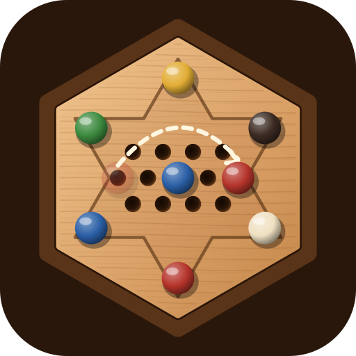
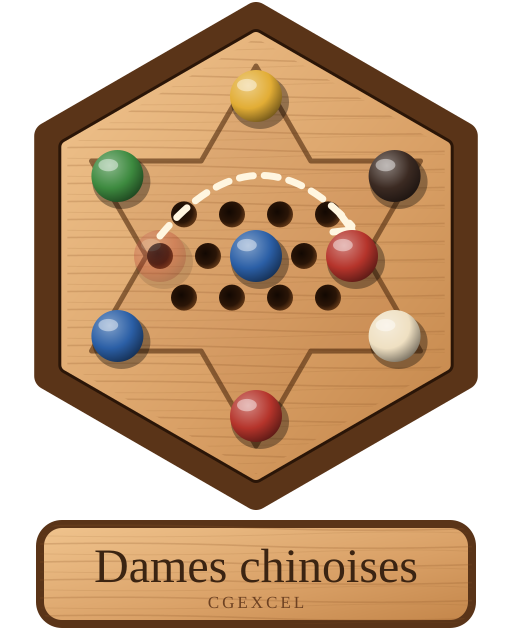

Dames chinoises
Chaque joueur part d'une pointe de l'étoile avec 10 pions. Le premier qui amène tous ses pions dans la pointe opposée gagne.
À son tour, on déplace un seul pion :
Mode Bonne-Maman (saut long, coché par défaut) : si le pion sauté est séparé du vôtre par n trous vides, vous retombez de l'autre côté en laissant aussi n trous vides, à condition que tous ces trous et le trou d'arrivée soient libres. Avec n = 0, c'est le saut classique. Sans le mode Bonne-Maman, seul le saut classique par-dessus un pion voisin est permis.
Les sauts peuvent s'enchaîner dans toutes les directions pendant le même tour.
Triangles des autres : un pion peut traverser les triangles des autres joueurs pendant ses sauts, mais il ne peut pas s'y arrêter. Il ne s'arrête qu'au centre, dans son triangle de départ ou dans son triangle d'arrivée.
Anti-blocage : si votre pointe d'arrivée est pleine et que les pions adverses qui y restent (3 au plus) ne peuvent plus bouger, vous gagnez quand même : ils échangent leur place avec vos pions restés dehors.
Touchez (ou cliquez) un de vos pions, puis un trou en surbrillance. Vous pouvez aussi faire glisser le pion. Survolez un trou pour voir le chemin des sauts.
Finir seul : quand la partie s'arrête avant que le dernier joueur ait rangé tous ses pions, il peut continuer seul jusqu'au bout (bouton « Finir seul » de l'écran de fin ; touchez le plateau pour revoir cet écran).
Installer le jeu sur le téléphone ou l'ordinateur : bouton 📲 en haut de l'écran.
Pour incliner le plateau, faites glisser deux doigts vers le haut ou vers le bas (sur PC : la molette de la souris).
CGExcel — Cyrille Gindre — © 2026
Licence MIT + BAL 1.0 — Bonne Action License
En échange, une seule chose vous est demandée, sur l'honneur : faire une bonne action chaque jour. Aider un voisin, sourire à un inconnu, ramasser un papier… c'est vous qui voyez.
Vous pouvez finir de ranger vos pions tout seul.
Sur iPhone ou iPad, dans Safari : touchez le bouton Partager (le carré avec une flèche vers le haut), puis « Sur l'écran d'accueil ».
Ouvrez le menu du navigateur (⋮ ou …), puis choisissez « Installer l'application » ou « Ajouter à l'écran d'accueil ».
Le jeu s'installe alors comme une application : il s'ouvre en plein écran et fonctionne sans connexion. L'installation n'est possible que si le jeu est ouvert depuis une adresse https:// (par exemple GitHub Pages).